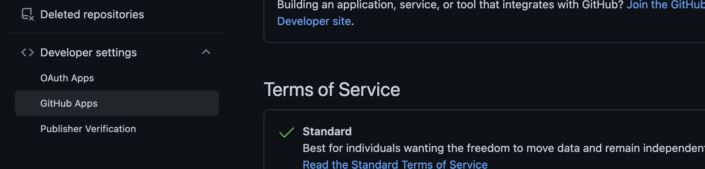
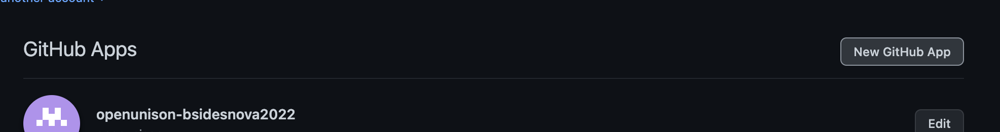
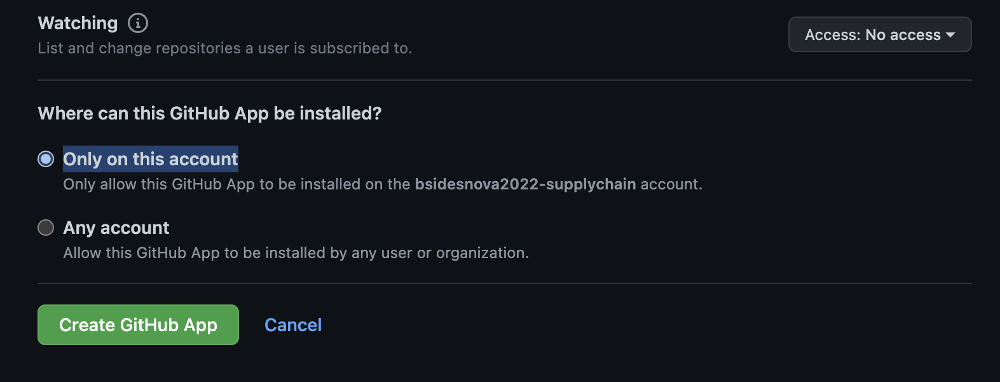
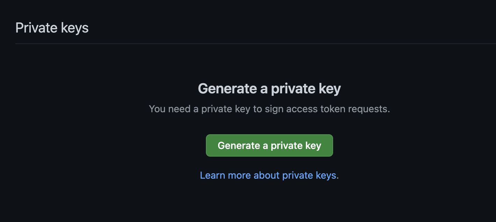
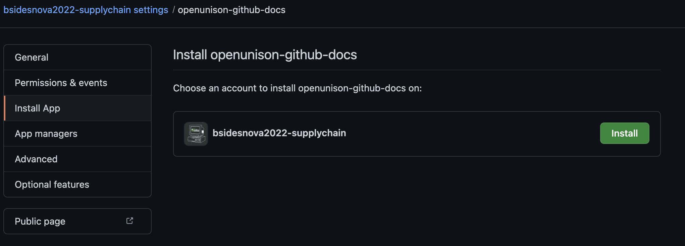

GitHub
OpenUnison can be used to with GitHub in three important ways:
- Use GitHub as an authentication source for developers interacting with your clusters and cluster manatement applications
- Use GitHub teams to manage access to your namespaces when using Namespace as a Service
- Provision access to your GitHub organization, as well as repositories, secrets, and keys
Authentication
Using GitHub for authentication is easy, just follow the instructions to Deploy the Authentication Portal, and choose GitHub when you configure your identity provider. You'll be able to reference your teams in RBAC bindings.
Using Github Teams in Namespace as a Service
You can use your GitHub teams when using the OpenUnison Namespace as a Service portal to control access to namespaces. You can configure your NaaS portal to lookup teams so you don't need to type them out.
INSTRUCTIONS
Provisioning Access and Resources to GitHub
Why use OpenUnison to provision access to GitHub? GitHub is often an instrumental part of any Kubernetes deployment, especially when talking about GitOps! If you want to automate GitOps with self service, you'll also want to automate the creation and integration of GitHub repositories and integration with your GitOps controller. For example, take an example where you want to give developers a personal namespace to do development. The developer will need:
- GitHub repository for the application
- Github repository for the application's manifests
- An
Applicationin ArgoCD - SSH keys to integrate all of these components
You could script all this, but OpenUnison simplifies this integration by automating the deployment without having an administrator get involved! Here's a quick demo of this in action:
DEMO of BSIDESNOVA
Creating a GitHub Provisioning Target
OpenUnison communicates with GitHub via a GitHub App. This provides for shorter lived tokens and provides increased security for integrating with GitHub. Before configuring your OpenUnson Target, register a new GitHub App:
Registering a GitHub App
The first step is to go to your organization's settings and click on GitHub Apps:

Next, click on New GitHub App:

You'll likely be asked to re-authenticate or use the GitHub mobile app to verify your identity. Next, choose a name and set a description. You're required to provider a URL, but this can point to anything. Skip the callback URL, OpenUnison doesn't need it. Keep Expire user authentication tokens checked. Keep Request user authorization (OAuth) during installation and Enable Device Flow unchecked. Uncheck Active under WebHook.
Next, you'll need to set permissions for the app. Which ones you need depends on what you want to be able to do. If you want to just use this connection with GitHub to read teams:
| Location | Feature | Permission |
|---|---|---|
| Organization permissions | Administration | Read Only |
| Organization permissions | Members | Read Only |
If you want to be able to provision users into teams:
| Location | Feature | Permission |
|---|---|---|
| Organization permissions | Administration | Read and Write |
| Organization permissions | Members | Read and Write |
Each of the tasks below will require additional permissions. You can update these permisions later too.
Finally, after permissions and under Where can this GitHub App be installed? choose Only on this account and click Create GitHub App:

Once your app is created, the next step is to create a private key. Skip the Client secrets section, using static secrets is not the preferred way to interact with the GitHub api and OpenUnison automates token management for you. Scroll to the bottom where you'll find Private keys and click Generate a private key:

That will generate and downlaod a PEM file. Rename this file to something that works for a Kubernetes Secret and create a Secret from it in the openunison namespace. Next, click on Install App, choose your organization and click Install:

Once your app is installed, make a note of the App ID:
Finally, create a Target in the openunison namespace:
ADD DOCS FOR ENTERPRISE
apiVersion: openunison.tremolo.io/v1
kind: Target
metadata:
name: github
namespace: openunison
spec:
className: com.tremolosecurity.provisioning.core.providers.GitHubProvider
params:
- name: appid
value: "XXXXXX"
- name: org
value: "my-orgianization-name"
secretParams:
- name: githubAppKey
secretName: secret-that-you-created
secretKey: name-of-pem-file
targetAttributes:
- name: sub
source: sub
sourceType: user
At this point, OpenUnison will be able to interact with your GitHub instance. You can use any of the below tasks in your workflows. If you want to add permissions to your app after it's installed, you'll need to re-authorize it:
ADD REAZ
Create Repository
This task will generate a repository and create a deployment key that can be used in other tasks throughout the workflow.
- taskType: customTask
className: com.tremolosecurity.provisioning.customTasks.github.CreateGithubRepo
params:
targetName: github
name: $github_user$-workshop-application
description: project for supplychain workshop
team: admin-$github_user$-workshop
# optional paramters
# allowSquashMerge: "true"
# allowMergeCommit: "true"
# allowRebaseMerge: "true"
# deleteBranchOnMerge: "false"
# defaultBranch: "main"
# homePage: "https://www.tremolosecurity.com/"
# visibility: "public"
# issues: "true"
# projects: "true"
# wiki: "true"
# downloads: "true"
# isTemplate: "false"
# gitignoreTemplate: ""
# licenseTemplate: ""
# autoInit: "true"
# owner: ""
# deployKeyName: "deployment-key"
# webhookUrl: ""
# webhookEvents: []
Required Permissions
In order for your GitHub App to use this API, enable:
| Location | Feature | Permission |
|---|---|---|
| Repository permissions | Administration | Read and Write |
| Repository permissions | Webhooks | Read and Write |
Generated Request Objects
This task generates several objects that get added to the workflow request object. These can then be used by other tasks later in the workflow.
| Request Object Name | Example | Description |
|---|---|---|
gitSshUrl |
git@github.com:bsidesnova2022-supplychain/unison-test-user-3-workshop-infrastructure.git | The SSH git URL for the generated repository |
gitPrivateKey |
SSH Private Key | The plain text version of the ssh key created for this repo |
base64SshPrivateKey |
Base64 Encoded key | The base 64 encoded version of the private key, useful for creating Secret objects |
Add Team to Repository
This task will add a team to a repository with the given permissions
- taskType: customTask
className: com.tremolosecurity.provisioning.customTasks.github.AddTeamToRepo
params:
targetName: github
teamName: admin-$github_user$-workshop
repoName: $github_user$-workshop-application
# Can be admin, triage, read, write
permission: admin
Required Permissions
In order for your GitHub App to use this API, enable:
| Location | Feature | Permission |
|---|---|---|
| Repository permissions | Administration | Read and Write |
Create Git File
This task allows you to create a single file in your repository. Useful if you need to create a README or other file when initializing a repository.
- taskType: customTask
className: com.tremolosecurity.provisioning.customTasks.github.CreateGitFile
params:
targetName: github
repository: $github_user$-workshop-application
branch: main
commitMessage: initial create
path: README.md
content: |-
#Project
This is a very important project
Required Permissions
In order for your GitHub App to use this API, enable:
| Location | Feature | Permission |
|---|---|---|
| Repository permissions | Administration | Read and Write |
| Repository permissions | Contents | Read and Write |
Create Deployment Key
It's typical to generate multiple deployment keys for different use cases. This task will generate a key, deploy it to the repo and make the private key available as a request object that can be provisioned into another system. The key can be marked as read only or with read-write permissions.
- taskType: customTask
className: com.tremolosecurity.provisioning.customTasks.github.CreateDeploymentKey
params:
targetName: github
repo: $github_user$-workshop-infrastructure
keyLabel: infrastructure-update
makeWriteable: "true"
privateKeyReuestName: "infraSshKeyB64"
privateKeyReuestNamePT: "infraSshKey"
Required Permissions
In order for your GitHub App to use this API, enable:
| Location | Feature | Permission |
|---|---|---|
| Repository permissions | Administration | Read and Write |
Generated Request Objects
The values of the privateKeyReuestName and privateKeyReuestNamePT are the base 64 encoded key and the plain text key that can be used in other tasks.
Create Secret
This task will generate a secret and add it to your repository. The secret is encrypted using the native salt libraries per GitHub's specifications.
- taskType: customTask
className: com.tremolosecurity.provisioning.customTasks.github.CreateSecret
params:
targetName: github
repoName: $github_user$-workshop-application
name: DEPLOY_KEY
value: "$gitPrivateKey$"
Required Permissions
In order for your GitHub App to use this API, enable:
| Location | Feature | Permission |
|---|---|---|
| Repository permissions | Secrets | Read and Write |